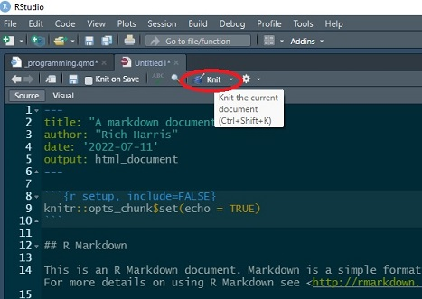
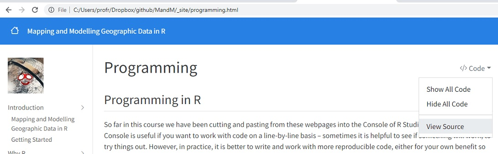
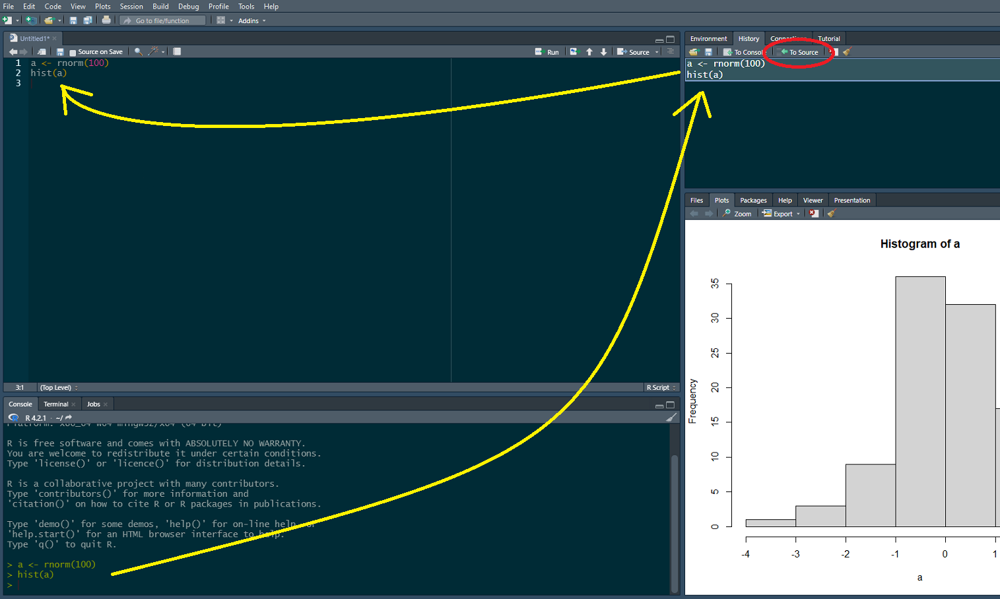
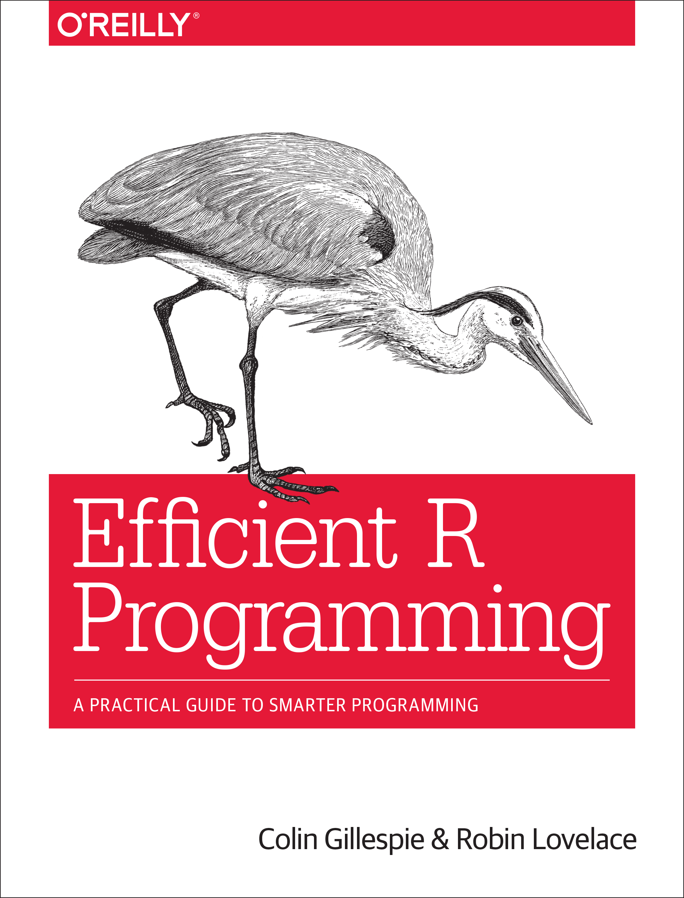

Code
download.file("https://github.com/profrichharris/profrichharris.github.io/raw/main/MandM/scripts/script1.R",
"script1.R", mode = "wb", quiet = TRUE)So far in this course we have been cutting and pasting from these webpages into the Console of R Studio. Working in the Console is useful if you want to work with code on a line-by-line basis – sometimes it is helpful to see if something will work; to try things out. However, in practice, it is better to write and work with more reproducible code, either for your own benefit so you can modify something without having entirely to start-over, or for the benefit of others who would like to reproduce your work. Reproducibility is an important component of open research and is to be encouraged wherever possible.
A script is a text file containing a sequence of commands that can be run together, one after the other, without entering them separately in the Console. Let’s download an example of a script:
download.file("https://github.com/profrichharris/profrichharris.github.io/raw/main/MandM/scripts/script1.R",
"script1.R", mode = "wb", quiet = TRUE)You can now use file.edit("script1.R") to view its contents. It should look like this:

The script is essentially the same code that was used previously when answering the question “why R?”, producing maps of ethnic diversity in the English cities of Birmingham, Leicester, London and Manchester. The main difference is that the maps are output to create a .pdf file rather than to screen.
If you now click within the window of the script and use command-A (Mac) or ctrl-A (Windows) to select all the code, followed by command-Enter/Return (Mac) or ctrl-Enter/Return (Windows) – or use the Run button towards the top-right of the script window – then the script will run in its entirety and should, at its conclusion, produce the document maps.pdf in your Working Directory.
Be patient whilst the code takes a few moments to run.
You can check the document is there with,
file.exists("maps.pdf")[1] TRUEand you should be able to open it with,
system("open maps.pdf")Try also typing source("script1.R", echo = TRUE) into the R Console. Again, the script should run in its entirety.
Scripts are useful but sometimes we wish to author documents that combine written text such as this with executable R code and its outputs, then to publish them as html, pdf or Word documents. This is where R Markdown is useful.
From the dropdown menus, select File -> New File -> R Markdown. Create the document in html format and give it any title you like.

After R Studio has created the document, Knit it. The first time you do this, you will be asked to save the document - call it markdown1.Rmd or any other name you prefer.

It is self-evident what knitting the document does – it produce an html file which includes the text and formatting, the R code (unless suppressed with echo = FALSE) and output from that code. It also includes the option to publish the document on RPubs (although I suggest you don’t do this now).

This whole course is written based on R Markdown. You can download the markdown file for this session
download.file("https://github.com/profrichharris/profrichharris.github.io/raw/main/MandM/markdown/programming.Rmd", "markdown_example.Rmd", mode = "wb", quiet = TRUE)and view it using file.edit("markdown_example.Rmd"). You may note that it begins with a YAML header, to which various arguments can be added or changed – see here for an introduction.
---
title: "Programming"
author: "Rich Harris"
date: '2022-07-11'
output: html_document
---It then consists of a mixture of text and code chunks. Those code chunks can be executed within the document using the Run drop-down menus and buttons.

The document also includes various syntax, including ##header for a header, **bold** for bold,  to insert an existing image file, and so forth. To learn more, see the R Markdown cheatsheet.
This page has actually been authored in a variant of R markdown, using quarto. You can view the source code for this and other pages using View Source from the drop-down Code options at the top of the page.

Although a lot of what we will do in this course will involve cutting and pasting into the Console, keep in mind that there are better ways of programming that are more reproducible than entering commands one at a time into the Console. These include scripting and using markdown. Note also that as commands are entered into the Console, they are saved in the History to the top right of the screen. All or part of that history can be selected and moved to a source file (a new R Script) as the following shows. The history can also be saved – see ?save.history().


The book, Efficient R programming by Colin Gillespie and Robin Lovelace has an online version here.
More about R Markdown can be learned from https://rmarkdown.rstudio.com/. It is a bit advanced for this stage of the course but it is worth noting that there is a cheatsheet available.